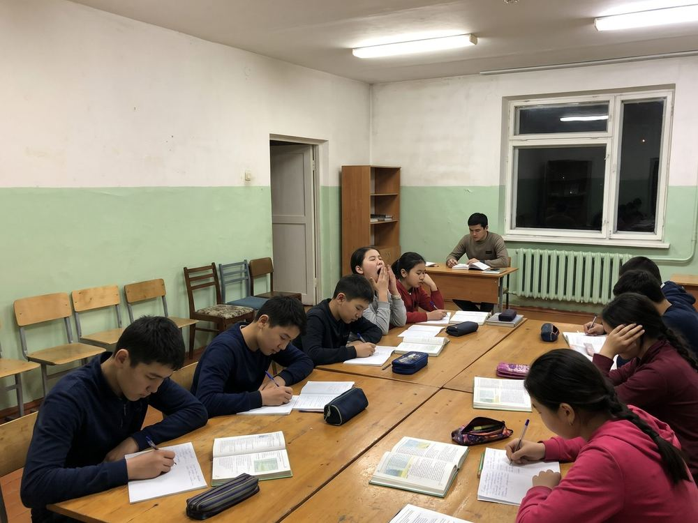

The boarding house has been part of the Lyceum since 1979, when it was a school for the whole republic. Today it takes pupils from the six districts and from Iyık Janyl, so that a talented child from a village school has the same chance as a child from Talas.
Daily routine
| 7:00 | Rising, breakfast |
| 8:00–15:20 | Lessons |
| 15:30 | Lunch |
| 16:30–18:30 | Olympiad circles, sport |
| 19:00 | Supper |
| 19:45–21:30 | Study hour (with a teacher on duty) |
| 22:30 | Lights out |
Pupils go home for the holidays and, if the road allows, on Saturday afternoon; they return on Sunday by 20:00. In winter the Lyceum bus takes pupils of the Kara-Buura and Chu districts to the bus station.
Living
Rooms for four, boys and girls on separate floors, a tutor on each floor, a nurse every day. Meals four times a day, paid by the Lyceum Trust.
Places for 2027–2028
Apply together with the admission form. Priority: pupils from village schools, then from district centres.
Tutors: Gulbara Sydykova, deputy director, +996-39-2-31-44-69